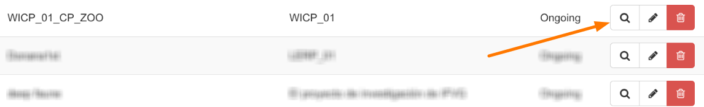
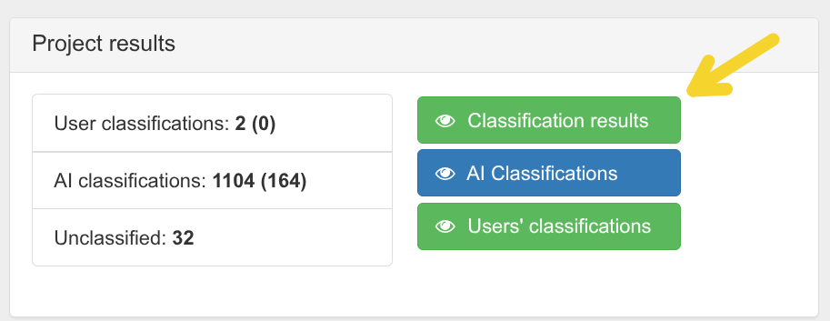
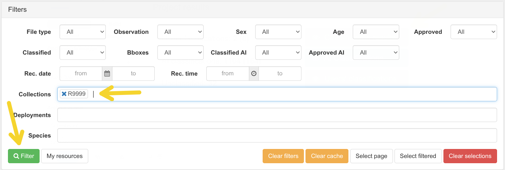
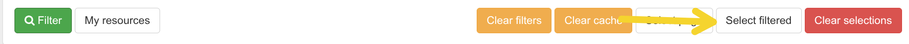
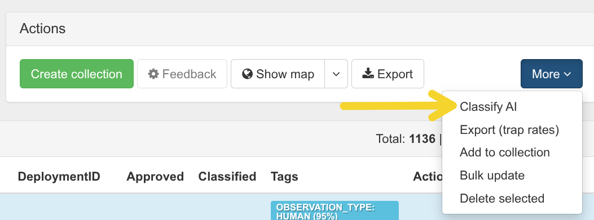
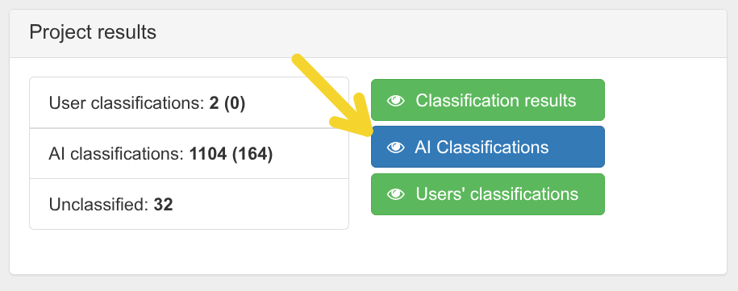
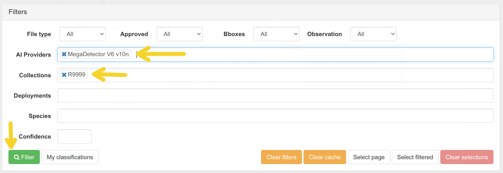
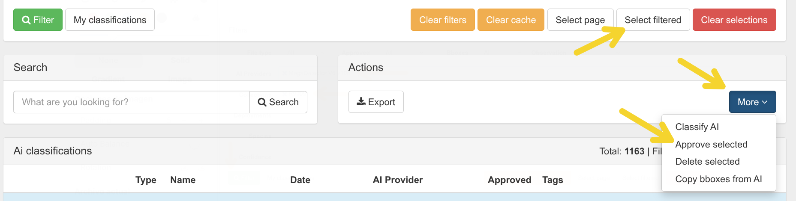
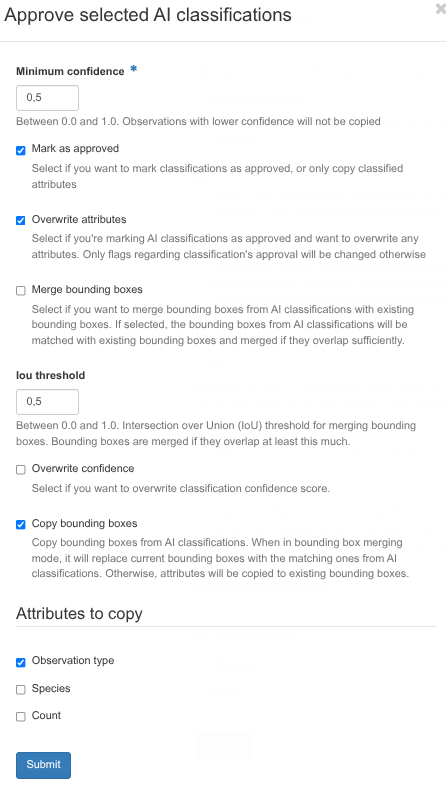

zooniverse module
Automates the workflow between a Trapper instance and Zooniverse, covering two main stages:
- Upload — images with bounding boxes detected and approved in Trapper are loaded into Zooniverse subject sets for citizen-science classification.
- Import annotations — classifications collected in Zooniverse are exported back to Trapper as observations, following a configurable consensus process.
To support this workflow, a set of auxiliary commands is provided for querying and inspecting Zooniverse resources such as subjects, subject sets, workflows, and exported classification data.
sequenceDiagram
autonumber
participant Trapper
participant WildIntelTools
participant Zooniverse
loop Detection & Revision
Trapper->>Trapper: Detect bounding boxes
Trapper->>Trapper: Approve detections (review)
end
Trapper->>WildIntelTools: Detections are ready
WildIntelTools->>Trapper: Fetch images per deployment
WildIntelTools->>WildIntelTools: Build sequences (n images, no humans)
WildIntelTools->>Zooniverse: Upload sequences as subject set
loop Citizen science annotations
Zooniverse->>Zooniverse: Users classify subjects
end
Zooniverse-->>WildIntelTools: Export classifications
WildIntelTools->>WildIntelTools: Apply consensus
WildIntelTools->>Trapper: Send CSV with observationsQuick start
The workflow starts in Trapper, where an AI model is used to detect animals (bounding boxes) in a collection of images. Once those detections are approved, the images are uploaded to Zooniverse for citizen-science classification. The resulting annotations are then imported back into Trapper as observations.
Step 0 — Configuration
Before running any command, the connection to both Trapper and Zooniverse must be configured. The easiest way to do this is through the interactive setup wizard:
$ uv run wildintel-tools zooniverse wizard setup
━━━━━━━━━━━━━━━━━━━━━━━━━━━━━━━━━━━━━━━━━━━━━━━━━━━━━━━━━━━━━━━━━━━
Configure zooniverse module
━━━━━━━━━━━━━━━━━━━━━━━━━━━━━━━━━━━━━━━━━━━━━━━━━━━━━━━━━━━━━━━━━━━
ℹ This wizard will guide you through Zooniverse connection settings.
Continue? [y/N]:
The wizard will guide you through the following questions:
- Zooniverse username and password — credentials for your Zooniverse account.
- Zooniverse project ID — numeric ID of the Zooniverse project where subjects will be uploaded. You can find it in the URL of your project's lab page:
https://www.zooniverse.org/lab/{project_id}. - Number of images per sequence — how many images are sampled from each burst and uploaded as a single subject to Zooniverse. A burst (sequence) is a group of consecutive photos taken within the maximum interval. Default:
5. - Maximum interval between images in a sequence (seconds) — maximum gap in seconds between two consecutive photos for them to be considered part of the same sequence. If the gap exceeds this value, a new sequence starts. Default:
90. - Maximum upload attempts per sequence — number of times the upload of a sequence is retried if a transient error occurs (e.g. network timeout). Default:
5. - Delay between sequence upload attempts (seconds) — seconds to wait before retrying a failed sequence upload. Default:
15. - Maximum attempts per subject — number of times the upload of a single subject (image) to Zooniverse is retried after a failure. Default:
5. - Delay per subject retry (seconds) — seconds to wait before retrying the upload of a single subject. Combined with the per-subject attempt limit, this controls the backoff for quota or connectivity errors at subject level. Default:
30. - Trapper username for Zooniverse observations (classifiedBy) — the Trapper account that will appear as the author of each observation generated from Zooniverse classifications. This must match the account used when importing the resulting CSV into Trapper (see Step 4). Default:
zooniverse@wildintel-project.org.
Once the wizard completes, verify that the connection details are correct by running:
$ wildintel-tools zooniverse test-connection
ℹ Testing Zooniverse API connection XXXXX@.uhu.es...
✅ Zooniverse API connection successful!
A successful response confirms that wildintel-tools can authenticate against Zooniverse and is ready to use.
Step 1 — Run AI detection in Trapper
As a general rule, images containing humans or vehicles are not uploaded to Zooniverse. To determine whether an image contains such content, an AI detector must first be run in Tapper: it calculates bounding boxes and labels each image with the type of content detected (animal, human, vehicle). Only images labelled as animals — or with no detections — are eligible for upload. This detection process is carried out as follows:
-
In your Trapper instance, go to Classification → Classification Projects and click the magnifier icon on the classification project you want to use.

-
Click Classification Results.

-
In the form that appears, fill in the Collections field with the names of the collections whose images you want to process, then click Filter.

-
Click Select filtered to mark all images.

-
Under Actions, click More and select Classify AI. Choose the AI model to run.

-
After the detection job finishes (duration depends on the number of images), return to the Classification Results page and select AI Classifications.

-
Filter by collection, deployment, and/or AI provider, then click Filter. The detection results from the previous step (step 5) should appear.

-
Click Select filtered, then under Actions → More click Approve selected.

-
In the confirmation form, enable the following options: Mark as approved, Overwrite attributes, Copy bounding boxes, Observation type.

Info
At this point the images are approved in Trapper with their bounding boxes and are ready to be uploaded to Zooniverse.
Step 2 — Upload images to Zooniverse
There are two ways to upload images to Zooniverse: using the interactive wizard (recommended for first-time users)
or running the import command manually (recommended for advanced users or automation).
Option A — Wizard (recommended)
The wizard guides you step by step through the entire import process, asking you to select the collection, subject set, deployments, and other options interactively. No prior knowledge of the command-line options is required.
$ uv run wildintel-tools zooniverse wizard import
━━━━━━━━━━━━━━━━━━━━━━━━━━━━━━━━━━━━━━━━━━━━━━━━━━━━━━━━━━━━━━━━━━━
Import a Trapper collection to Zooniverse
━━━━━━━━━━━━━━━━━━━━━━━━━━━━━━━━━━━━━━━━━━━━━━━━━━━━━━━━━━━━━━━━━━━
ℹ This wizard will guide you through uploading images from a Trapper
collection to a Zooniverse subject set.
Continue? [y/N]:
The wizard will guide you through the following steps:
- Select the Trapper collection — choose the collection whose images you want to upload.
- Select or create a subject set — choose an existing Zooniverse subject set or create a new one with a custom name.
- Select the classification project — if the collection is linked to more than one classification project, you will be prompted to pick one.
- Filter by deployments (optional) — narrow the upload to specific deployments within the collection.
- Review and confirm — a summary of all selected options is shown before the upload starts.
Once confirmed, the wizard launches the import and displays a live progress bar. After completion it prints a summary report. The full report details can be accessed at any time by running:
Option B — Manual (import command)
To upload images use the wildintel-tools zooniverse import command. This command requires the Trapper collection
ID you want to upload.
After execution, the application reports the process status and concludes by presenting a summary of the generated results. The full report details can be accessed by running
By default, the command creates a new subject set in Zooniverse with an auto-generated name. To specify a custom name or
reuse an existing subject set, pass the SUBJECTSET_NAME argument.
Import collection with ID 123 to a subject set named 'My subject set name'
Tip
You can query for existing subject sets using the wildintel-tools zooniverse ss command and check their IDs and
names before running the import.
In some cases, a single collection could be linked to multiple classification projects. You can specify the classification
project to use with the --cp option. This is required to correctly resolve the media metadata and link the uploaded
subjects to the right project in Trapper.
Import collection with ID 123 to a subject set named 'My subject set name' using classification project with ID 123
If a collection contains many images, you can filter them by deployment using the --deployments option. Thus only
images from the specified deployments will be uploaded to Zooniverse. This option accepts a comma- or space-separated
list of deployment IDs to include in the upload.
Import collection with ID 123 to a subject set named 'My subject set name' using only deployments with IDs 123 and 456
Also, if you want to exclude some deployments, use the --exclude-deployments option. This option accepts a comma- or
space-separated list of deployment IDs to exclude from the upload.
Import collection with ID 123 to a subject set named 'My subject set name' excluding deployments with IDs 789 and 101
If this command was interrupted or some images were already uploaded in a previous run, you can pass a Zooniverse subjects
export file to skip those images and avoid duplicates using
the --exclude-subjects option.
Import collection with ID 123, excluding deployments 789 and 101, and skipping already uploaded subjects listed in subjects_export.tsv
Tip
You can download the subjects export file from https://www.zooniverse.org/lab/{project_id}/data-exports under
Request new subject export. Use the uploaded-media command to inspect the file and verify which
media IDs have already been uploaded before running import.
Step 3 — Validate the subject set
Before making the subject set live for classification, verify that the upload completed correctly. Four dedicated
commands cover different aspects of the validation. Use them individually for targeted checks or run check-subject-set
to perform all of them at once. For efficiency reasons, all these commands make use of the Zooniverse subjects
export file.
Full check — check-subject-set
Runs all four validations in a single pass and prints a consolidated report:
- Missing media — media Trapper expected to upload but absent from the CSV.
- Extra media — subjects present in the CSV that Trapper never intended to upload.
- Duplicated media — media IDs linked to more than one subject (uploaded more than once).
- Unmatched subjects — subjects whose metadata contains no extractable Trapper media ID.
- Metadata issues — subjects whose metadata fields are incomplete or incorrect.
Full validation of collection 66 against a subjects export
The summary line at the end shows all counters at a glance:
Summary: 1420 expected · 1418 uploaded · 2 missing · 0 extra · 0 duplicated · 1 unmatched · 0 metadata issues
Check missing media — check-missing-media
Follows the same media-selection logic as import (deployments, sequences, public-only, human-filtered) and reports
every media ID that Trapper expects in the subject set but is absent from the CSV. Requires a Trapper connection.
Check for missing media in collection 66
Use --pipeline to get only the missing media IDs as plain output, one per line, suitable for shell pipelines:
Check duplicated media — check-duplicated-media
Scans the CSV and reports every media ID that appears linked to more than one subject ID. This indicates the same Trapper media was uploaded multiple times, which can skew classification results.
Check for duplicated media IDs
Filter to a specific subject set with --ss:
Check unmatched subjects — check-unmatched-subjects
Scans the CSV and lists every subject ID from which no Trapper media_id can be extracted. This usually indicates
missing or malformed origin / external_id metadata fields.
Check for subjects with no media ID
Check metadata only — check-metadata
Validates that every subject in the CSV has all required metadata fields (external_id, preview, link,
thumbnail, origin, license, image_name) and that a Trapper media ID can be extracted from them.
Does not require a Trapper connection.
Check metadata for all subjects
Use --all to display every subject (not just those with issues), or --pipeline to output only the
subject_ids with problems for use in scripts:
Step 4 — Import annotations back to Trapper
Once all the subjects in a subject set linked to a Zooniverse workflow have been classified, the annotations can be
imported back into Trapper. As with the upload step, there are two ways to do this: using the interactive wizard
(recommended for first-time users) or running the export command manually (recommended for advanced users or
automation).
Option A — Wizard (recommended)
The wizard guides you step by step through the entire export process, asking you to select the subject set, workflow, collection, and classification project interactively. No prior knowledge of the command-line options is required.
$ wildintel-tools zooniverse wizard export
━━━━━━━━━━━━━━━━━━━━━━━━━━━━━━━━━━━━━━━━━━━━━━━━━━━━━━━━━━━━━━━━━━━
Export annotations from a Zooniverse subject set to Trapper
━━━━━━━━━━━━━━━━━━━━━━━━━━━━━━━━━━━━━━━━━━━━━━━━━━━━━━━━━━━━━━━━━━━
ℹ This wizard will guide you through exporting Zooniverse classification
results back to Trapper as observations. You will need to select
the subject set, the research project and the classification project.
Continue? [y/N]:
The wizard will guide you through the following steps:
- Select the Zooniverse subject set — choose the subject set whose classifications you want to export.
- Select the Zooniverse workflow — choose the workflow in which volunteers performed the classifications.
- Select the Trapper collection — choose the destination collection in Trapper.
- Select the classification project — choose the Trapper classification project linked to that collection.
- Filter by deployments (optional) — restrict the export to specific deployments.
- Review and confirm — a summary of all selected options is shown before the export starts.
Once confirmed, the wizard applies the consensus process and generates a CSV file with observations ready to be imported into Trapper. It prints the path of the generated CSV and the Trapper import URL.
Important
The CSV import into Trapper must be performed while logged in as the Zooniverse user configured in
ZOONIVERSE.zooniverse_username. Using a different account will cause the import to fail or produce incorrect results.
Option B — Manual (export command)
Once all the subjects in a subject set linked to a Zooniverse workflow have been classified, use the export command.
You must specify the subject set whose labels you want to import (using the --ss option) and the workflow where the
labels were generated (using the --wf option). You also need to define the destination collection (--c) and the
classification project (--cp).
The command applies a consensus process to the classifications collected in Zooniverse and generates a CSV file with observations that can be imported into Trapper. It also prints the path of the generated observations CSV and the URL to import it into Trapper.
Export classifications from Zooniverse workflow with ID 123 and subject set with ID 456 to Trapper collection with ID 789 and classification project with ID 101
By default, the command processes all deployments linked to the specified collection. To restrict the export to specific
deployments, use the --deployments option:
Same export using only deployments with IDs 123 and 456
By default, the command saves the generated observations CSV in a temporary directory. To specify a custom path, use the
--observations-file option:
Same export saving the observations CSV to /path/to/observations.csv
Since the raw Zooniverse annotations are often useful for debugging and analysis, they can be saved as a separate CSV
file by enabling the --save-zoo-annotations flag:
Same export also saving the raw Zooniverse annotations to a separate CSV
Important
The CSV import into Trapper must be performed while logged in as the Zooniverse user configured in
ZOONIVERSE.zooniverse_username. Using a different account will cause the import to fail or produce incorrect results.
Consensus process
Once Zooniverse volunteers have finished classifying a subject set, the raw output is a collection of individual opinions — one per volunteer per subject. Before those opinions can be imported into Trapper as observations, they must be reconciled into a single authoritative answer per image. This reconciliation is called the consensus process.
The consensus process answers three questions for each subject:
- How many distinct species appear in this image?
- Which species are they?
- How many individuals of each species are visible?
Each of these questions is answered by aggregating the volunteers' votes, not by selecting one individual's answer. The process is designed to be robust to outliers (e.g., a volunteer who labels an image with an unrealistic number of species) while still capturing the community's collective knowledge.
Default consensus implementation
The default implementation is split across two classes:
| Class | Responsibility |
|---|---|
AnnotationsExtractor (+ workflow subclass) |
Phase 1 — filter opinions, translate labels, determine k |
AnnotationsVoter (+ workflow subclass) |
Phase 2 — vote on species and count, compute confidence |
Phase 1 — Extraction (AnnotationsExtractor)
The extractor processes the raw Zooniverse classifications for a single subject. Its goal is to produce a clean,
normalised list of (species, attributes) pairs — one entry per volunteer choice — together with the consensus
number of species k for that image.
Steps:
-
Filter invalid opinions. Any volunteer classification that contains zero species choices or more than
k_maxchoices (default3) is discarded. This removes accidental submissions and implausible outliers. -
Record k per volunteer. For each surviving classification the number of species the volunteer labelled is stored in a list
k_list. -
Translate Zooniverse labels to Trapper names. Each Zooniverse choice string (e.g.
REDDEER) is mapped to a scientific name or category (e.g.Cervus elaphus) via the workflow-specificzoo_to_trapperdictionary defined in the subclass (e.g.Workflow29187AnnotationExtractor). -
Compute k majority. The consensus number of species k is the most frequent value in
k_list, capped atk_max. When there is a tie, the largest tied value is used.
The output passed to Phase 2 is a tuple (k, subject_id, opinions), where opinions is the full list of
(species_name, {HOWMANY: N, …}) pairs contributed by all valid volunteers.
Phase 2 — Voting (Workflow29187AnnotationsVoter)
The voter takes the normalised opinions from Phase 1 and produces one Zoo2TrapperObservation per species.
Steps:
-
Select the top-k species. Votes are counted per species. The k most-voted species are selected. When k > 1 the generic label
NOANIMALis excluded from competition (a volunteer who said "no animal" alongside a species choice is treated as having voted for the species only). -
Estimate individual count. For each of the top-k species, the individual counts (
HOWMANY) reported by all volunteers are collected and their median (rounded up) is used as the consensus count. -
Compute pairwise confidence. Confidence is assigned to each species in rank order:
- The pre-confidence of species i is the ratio of its votes to the combined votes of species i and i+1:
pre_conf = votes_i / (votes_i + votes_{i+1}). For the last species,pre_conf = 1.0. - The allocated confidence is
pre_conf × (1 − accumulated_confidence), so that the total confidence across all species in an image sums to 1.
- The pre-confidence of species i is the ratio of its votes to the combined votes of species i and i+1:
-
Build the observation. For each species a
Zoo2TrapperObservationis created with the consensus count, the two confidence values, and the appropriateobservationType(e.g.animal,blank,human).
Process diagram
flowchart TD
A([Raw Zooniverse classifications\nfor one subject])
subgraph P1["Phase 1 — AnnotationsExtractor"]
B["Filter opinions\n(discard if choices = 0 or > k_max)"]
B --> C["Record k per volunteer\n(number of species chosen)"]
C --> D["Translate labels\nzooniverse key → scientific name\nvia zoo_to_trapper"]
D --> E["Compute k majority\n(mode of k_list, capped at k_max)"]
end
subgraph P2["Phase 2 — AnnotationsVoter"]
F["Select top-k species\n(by vote count)"]
F --> G["Estimate individual count\n(median of HOWMANY per species)"]
G --> H["Compute pairwise confidence\npre_conf = votes_i / (votes_i + votes_i+1)\nconf = pre_conf × (1 − accumulated)"]
H --> I["Build Zoo2TrapperObservation\nper species"]
end
J([Observations list\nready to import into Trapper])
A --> B
E -->|"k · sid · opinions"| F
I --> J
style P1 fill:#e8f4f8,stroke:#2980b9,color:#000
style P2 fill:#eafaf1,stroke:#27ae60,color:#000Reference
test-connection
Test the connection to the Zooniverse API using the credentials in the active project settings.
Alias: tc
| Option | Type | Default | Description |
|---|---|---|---|
--zooniverse-username TEXT |
str | settings | Zooniverse username |
--zooniverse-password TEXT |
str | settings | Zooniverse password |
--zooniverse-project-id TEXT |
str | settings | Zooniverse project ID |
workflows
Retrieve and display workflows from the Zooniverse project.
Alias: wf
| Argument / Option | Type | Default | Description |
|---|---|---|---|
WF_ID |
str | all | Workflow ID(s) to retrieve (comma/space separated). Use - to read from stdin |
--pipeline |
flag | off | Print only workflow IDs as a comma-separated list (for shell pipelines) |
--query-param TEXT |
list | None |
Extra query parameters in key=value format. Repeatable. |
--raw |
flag | off | Display raw JSON output instead of a formatted table |
subjectsets
Retrieve subject sets from the Zooniverse project.
Alias: ss
| Argument / Option | Type | Default | Description |
|---|---|---|---|
SS_ID |
str | all | Subject set ID(s) (comma/space separated). Use - to read from stdin |
--pipeline |
flag | off | Print only subject set IDs as a comma-separated list |
--query-param TEXT |
list | None |
Extra query parameters in key=value format. Repeatable. |
--exports |
flag | off | Only return subject sets that have exports |
--wf-id |
int | None |
Filter to subject sets linked to this workflow ID |
--raw |
flag | off | Display each subject set as formatted JSON |
subjects
Retrieve individual subjects (images) from Zooniverse.
Alias: sbj
| Argument / Option | Type | Default | Description |
|---|---|---|---|
ID |
str | None |
Subject ID(s) (comma/space separated). Use - to read from stdin. Mutually exclusive with --subjectset-id. |
--subjectset-id, --ss-id |
int | None |
Retrieve all subjects from this subject set |
--pipeline |
flag | off | Print only subject IDs as a comma-separated list |
--query-param TEXT |
list | None |
Extra query parameters in key=value format. Repeatable. |
--raw |
flag | off | Show raw JSON for a single subject |
update-metadata
Update the metadata of all subjects in a Zooniverse subject set using data retrieved from Trapper. The command extracts the media_id from each subject filename, queries Trapper for the corresponding media in the selected classification project, and updates the subject metadata accordingly.
Alias: um
| Argument / Option | Type | Default | Description |
|---|---|---|---|
SS_ID |
int | required | Subject set ID to update |
--cp |
int | required | Trapper classification project ID |
--dry-run |
flag | off | Simulate the process — metadata is resolved but no subject is updated in Zooniverse |
--attempts |
int | 3 |
Maximum retry attempts per subject |
--delay-seconds |
int | 5 |
Seconds to wait between retries |
--white-list TEXT |
str | None |
Comma/space separated list of subject IDs to process exclusively |
--black-list TEXT |
str | None |
Comma/space separated list of subject IDs to skip |
import
Upload all media (images) from a Trapper collection to a Zooniverse subject set. Images are grouped into sequences according to the --n-images-seq and --max-interval parameters.
| Argument / Option | Type | Default | Description |
|---|---|---|---|
COLLECTION |
int | required | Trapper collection ID |
SUBJECTSET_NAME |
str | auto-generated | Name of the Zooniverse subject set to create or reuse |
--rp |
int | None |
Trapper research project ID |
--cp |
int | None |
Trapper classification project ID |
--deployments, -d TEXT |
str | all | Deployment IDs to include (comma/space separated). Use - to read from stdin. |
--exclude-deployments, -x TEXT |
str | None |
Deployment IDs to exclude |
--n-images-seq |
int | settings | Number of images per sequence |
--max-interval |
int | settings | Maximum interval (seconds) between images in the same sequence |
--dry-run |
flag | off | Simulate the process — no images downloaded, no subject set created, nothing uploaded |
export
Export the classification results of a Zooniverse subject set back to Trapper as observations.
Alias: exp
| Option | Type | Default | Description |
|---|---|---|---|
--wf, --workflow |
int | required | Zooniverse workflow ID |
--ss, --subject-set |
int | required | Zooniverse subject set ID |
--cp, --classification-project |
int | required | Trapper classification project ID |
--collection, --c |
int | required | Trapper collection ID |
--deployments, --d |
list[int] | all | Trapper deployment IDs to process |
--observations-file, -of PATH |
Path | auto | Path to save the raw observations CSV before upload |
--verbose / --no-verbose |
bool | True |
Show per-media detail in the progress bar |
--save-zoo-annotations / --no-save-zoo-annotations |
bool | True |
Save the raw Zooniverse user opinions as a separate CSV with a zoo_annotations_ prefix |
After the export completes, the command prints the path of the generated observations CSV and the Trapper import URL. The CSV must be imported into Trapper while logged in as the configured Zooniverse user (ZOONIVERSE.zooniverse_username).
Important
The CSV import into Trapper must be performed while logged in as the Zooniverse user configured in ZOONIVERSE.zooniverse_username. Using a different account will cause the import to fail or produce incorrect results.
download-ss
Download subject images from one or more Zooniverse subject sets to a local directory.
Alias: dl_ss
| Argument / Option | Type | Default | Description |
|---|---|---|---|
SS_IDS |
list[int] | required | One or more subject set IDs to download |
--output-dir, -o PATH |
Path | temp dir | Directory where downloaded images will be saved |
--max-workers |
int | 4 |
Number of parallel download threads |
--overwrite |
flag | off | Overwrite existing files |
--verbose / --no-verbose |
bool | True |
Show per-subject detail during download |
wizard
Interactive wizard for common Zooniverse workflows.
| Wizard | Description |
|---|---|
setup |
Guided configuration of Zooniverse connection settings |
import |
Guided step-by-step import of a Trapper collection to Zooniverse |
export |
Guided step-by-step export of Zooniverse annotations back to Trapper |
download |
Guided download of subject images from a Zooniverse subject set |
validate |
Guided validation of a Zooniverse subject set against a Trapper collection |
uploaded-media
Read a Zooniverse subjects export file and list the Trapper media IDs that have already been uploaded. Media IDs are extracted from the origin or external_id metadata field using the pattern /:media:<id>.
| Argument / Option | Type | Default | Description |
|---|---|---|---|
SUBJECTS_CSV |
Path | required | Path to the Zooniverse subjects export CSV/TSV file |
--subject-set-id, --ss-id |
int | None |
Filter by subject set ID. If omitted, all rows are included |
--pipeline |
flag | off | Output only media IDs separated by newlines (for shell pipelines) |
--unresolved |
flag | off | Show only subjects for which no media_id could be extracted |
--only-duplicated |
flag | off | Show only media_ids that appear more than once |
validate-subject-set
Validate a Zooniverse subject set against a Trapper collection using the same media-selection logic as import. Reports missing media (expected but absent from the subject set), extra media (uploaded but not expected), and subjects with incorrect metadata.
| Argument / Option | Type | Default | Description |
|---|---|---|---|
SUBJECTS_CSV |
Path | required | Path to the Zooniverse subjects export CSV/TSV file |
COLLECTION |
int | required | Trapper collection ID |
--rp, --research-project |
int | None |
ID of the research project |
--cp, --classification-project |
int | required | ID of the classification project linked to the collection |
--subject-set-id, --ss-id |
int | None |
Filter the CSV by subject set ID. If omitted, all rows are included |
--deployments, --d TEXT |
str | auto | Deployment IDs to include (comma/space separated) |
--exclude-deployments, --ed TEXT |
str | None |
Deployment IDs to skip |
--n-images-seq |
int | 5 |
Number of images per sequence |
--max-interval |
int | 90 |
Maximum interval between images in a sequence (seconds) |
check-metadata
Validate the metadata fields of every subject in a Zooniverse subjects export file. Checks that required fields (external_id, preview, link, thumbnail, origin, license, image_name) are present and that a Trapper media_id can be resolved.
| Argument / Option | Type | Default | Description |
|---|---|---|---|
SUBJECTS_CSV |
Path | required | Path to the Zooniverse subjects export CSV/TSV file |
--subject-set-id, --ss-id |
int | None |
Filter by subject set ID. If omitted, all rows are included |
--all |
flag | off | Show all subjects, not only those with issues |
--pipeline |
flag | off | Output only subject_ids with issues separated by newlines (for shell pipelines) |